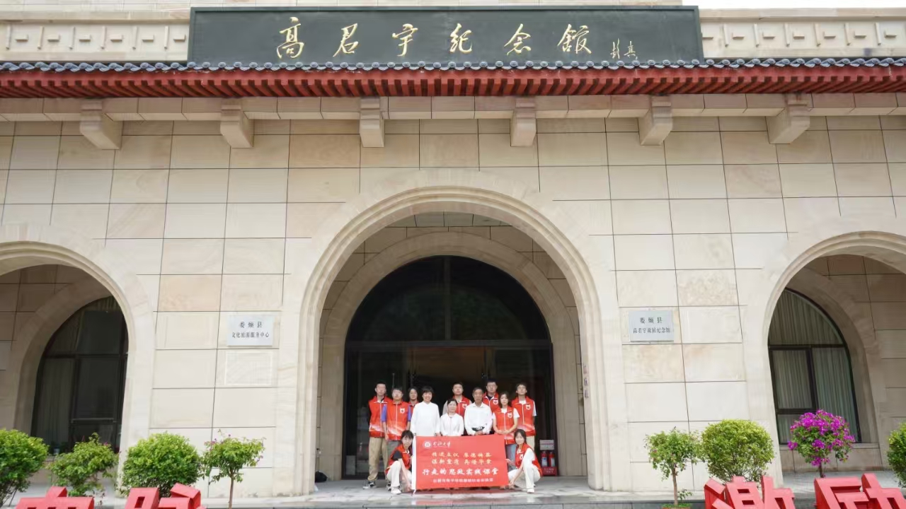
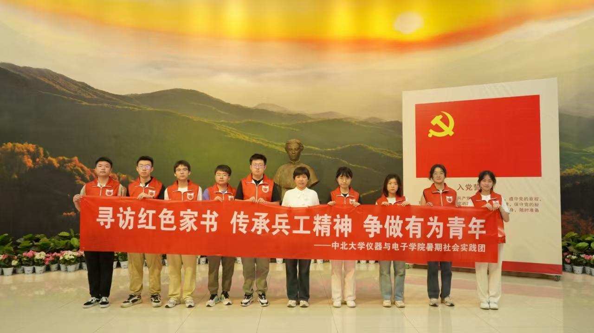

中北大学“数智赋能百年红色家书”暑期社会实践团成员在指导教师杜瑞平的带领下，来到了娄烦县高君宇故居纪念馆。高君宇，这位中国共产党早期的重要领导人，不仅在党的历史上留下了浓墨重彩的一笔，更以其坚定的革命信念和对理想的不懈追求，成为无数青年心中永恒的灯塔。实践团成员深入探索高君宇同志的生平事迹，通过数智技术对红色家书的传播方式进行创新，让红色记忆在新时代焕发新生。
步入纪念馆，实践团成员们被一幅幅生动的展板、一件件珍贵的文物深深吸引。成员们仔细聆听馆长史锦明的讲述，仿佛能穿越时空，与高君宇同志进行心灵的对话。在一封封家书中，实践团成员卢韵冰同学被高君宇同志对革命的忠诚所打动，她说：“这些家书不仅仅是文字的记录，更是红色精神的载体，让我们看到了革命先辈们不畏艰难、勇往直前的精神面貌。”
在参观过程中，吴荣嵘同学被高君宇同志坚定的革命信念深深触动，诵读了高君宇同志写给女友石评梅女士的家书片段：“我是有两个世界的:一个世界一切都是属于你的,我是连灵魂都永禁的俘虏；在另一个世界里,我是不属于你,更不属于我自己,我只是历史使命的走卒。”
白圣杰同学与云卓然同学围绕红色家书文化在新时代的传承以及社会实践对于青年学生成长成才的重要性等话题，与史锦明馆长展开了深入交流。史锦明馆长强调，红色家书不仅是历史的见证，更是革命精神与信仰的载体，对于当代青年了解历史、传承红色基因具有不可替代的价值。青年学生既要多读有字之书，也要多读无字之书，在社会实践中获得真知灼见，掌握真才实学。
参观之余，实践团成员们积极探讨如何利用数智技术，让高君宇同志的家书和纪念馆的珍贵资料“活”起来，走进更多人的视野。他们拍摄了大量高清照片和视频，计划通过制作微课堂、开展线上展览等方式，让无法亲临现场的人们也能感受到高君宇纪念馆的氛围，聆听那些跨越时空的红色故事。实践团成员王盈霜同学说：“我们希望通过数智技术，让红色文化跨越地域和时间的限制，触及更多人的心灵，让红色家书成为连接过去与未来的桥梁。”
此次参观，不仅是对中国共产党早期领导人高君宇生平的深入了解，更是一次红色文化传承与创新的实践。实践团成员们通过与纪念馆工作人员的交流，收集了许多关于高君宇同志家书和生活细节的宝贵资料，这些资料将成为他们后续进一步完善“数智赋能百年红色家书”项目的重要素材。实践团成员田杰显同学表示：“我们希望通过这次实践，不仅能够让更多人了解高君宇同志的革命故事，更能够激发大家对红色家书的重新认识，让这些承载着革命先烈深情与信念的家书，成为连接历史与未来的纽带。”
通过“数智赋能百年红色家书”暑期社会实践团的视角，我们不仅见证了一次对红色历史的深度探寻，更看到了青年学子如何运用数智技术，为红色记忆的传播与传承注入新的活力。让我们期待，未来有更多这样的青年，用青年人的热情与创新，让红色文化在新时代的数智赋能下，绽放出更加耀眼的光芒，成为激励一代又一代有志青年不断前行的精神动力。
宝剑火花献身革命 闪电彗星传奇一生
2024年08月21日
